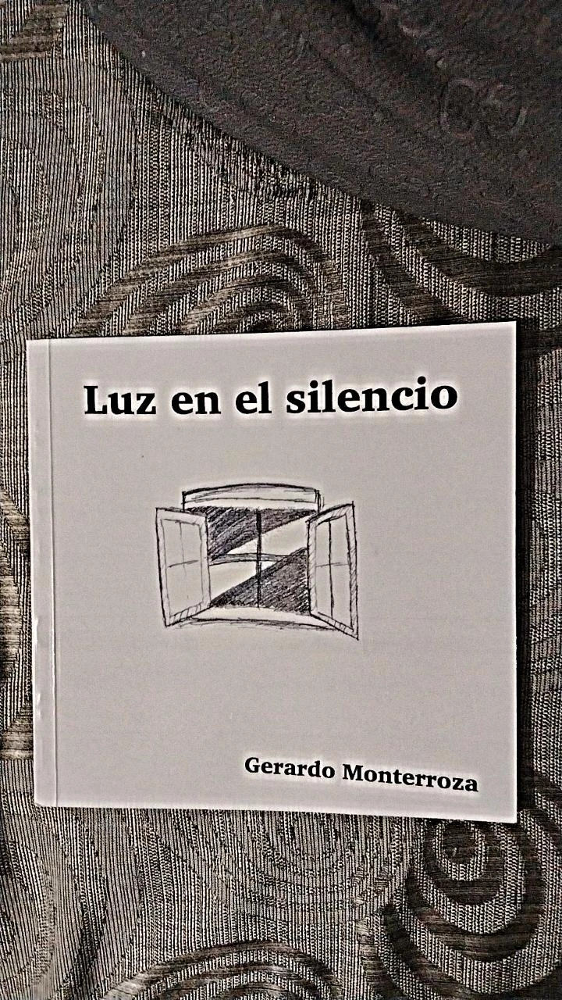
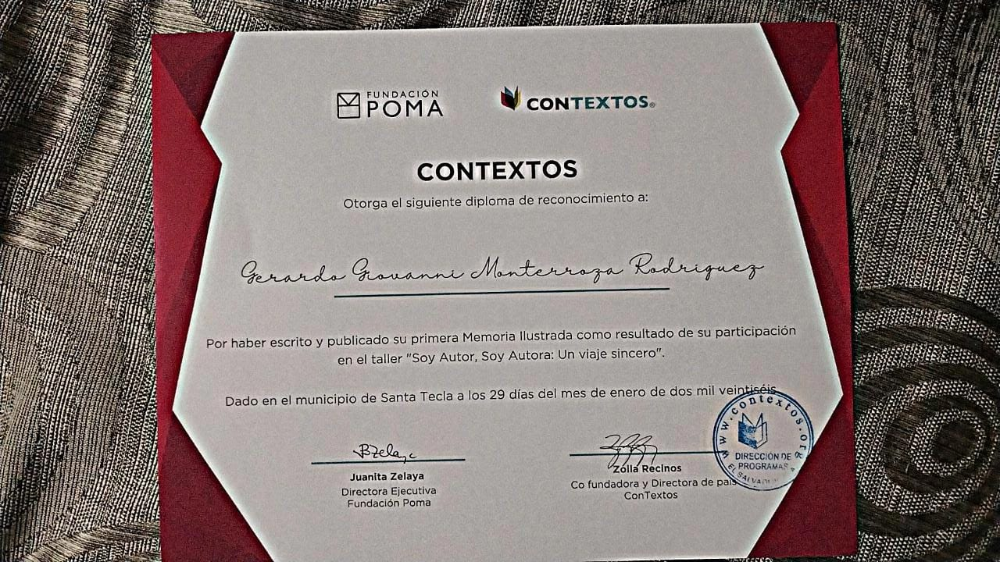

Proyecto 4
Mini libro
Memoria ilustrada a mano de más de 15 páginas creada para explorar la narrativa visual y generar reflexión en los lectores.


El concepto
El proyecto nace con el objetivo de desarrollar una faceta creativa fuera del entorno digital, plasmando una historia personal en formato impreso que invite al lector a detenerse y reflexionar.
Mi rol
Desarrollé de forma integral tanto el guion narrativo como todas las ilustraciones hechas a mano a lo largo de las más de 15 páginas que componen la obra.
Habilidades aplicadas
- Ilustración manual
- Narrativa escrita
- Diseño editorial impreso